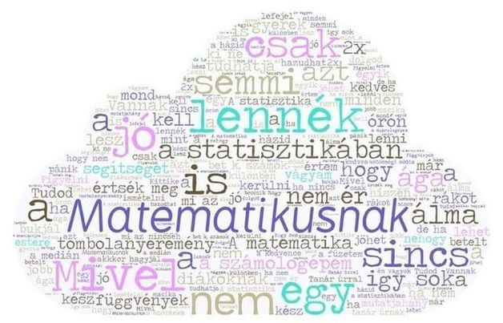
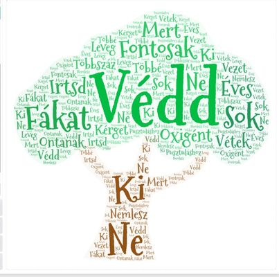

Versek

matematika
Matematikusnak nem lennék jo
a statisztikában sincs semmi jo
Mivel a Számológépem is csak egy tombola nyeremény
Így sok segítséget nem ér
A matematika egyik ága függvények
Diákoknak alma hogy értsék meg
A statisztika azt mutatja
Hany gyerek tudhatja
Vannak betűk számok
Minden vágyam kerülni a rákot
Figyelni kell órán
Nehogy bukjal
Tudod mi az a médián
Ha nem akkor hagyjál
Matekoran figyelmesen dolgozz
Semmi hozzafuzni való
Tanár úrral kedves lenni
Különben lehet ismételni
A statisztika hazudhat
Mint a közösségi média
Ki ne mond hogy nem értem
Hiszen lesz dolgod estére
Ha nincs kész a hazid
Jöhet a pánik
Mindig mondom hogy hagyjon már békén
így értem meg a végén
Beszélj hangosan
Ne úgy mint egy csivava
A fuzetem már 2x betelt
De ha nincsen lefejel
Tanar úrnak én vagyok a kedvence
Becézik hogy Kittike
A hazid jobb ha kész macika
Különben jöhet a szóráska

ktt
Védd a fákat fontosak
sok oxigént ontanak
Ne irtsd ki mert vétek a
Többszáz éves kérget
Nemlesz többé levegő
Ez pusztuláshoz vezető.

történelem
Én vagyok a király és földet adok néked
ha katona leszel te egyszerű lélek
De ha te esetleg nemesnek születtél
nem kell a pénzed a véreddel fizessél
Lovagi erények hűség és bátorság
legyél hűséges fő az igazság

Citrom
A citrom, más néven közönséges citrom, valódi citrom vagy európai citrom[1] (Citrus × limon) a citrusformák (Citroideae) alcsaládjába tartozó Citrus nemzetség egyik növényfaja. Termése, melyet szintén citromnak hívnak, déligyümölcs és egyben fűszer is.